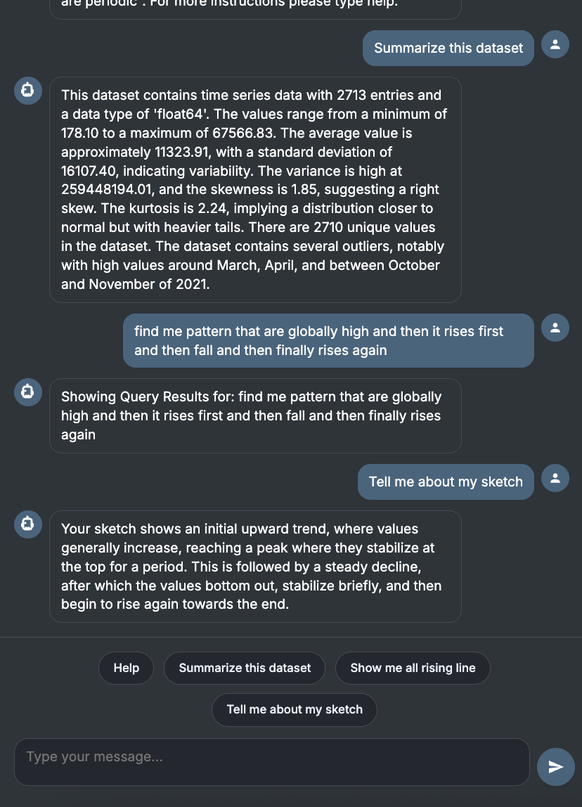
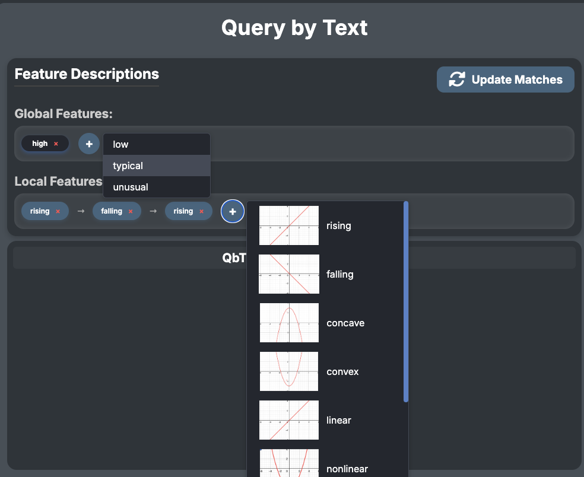
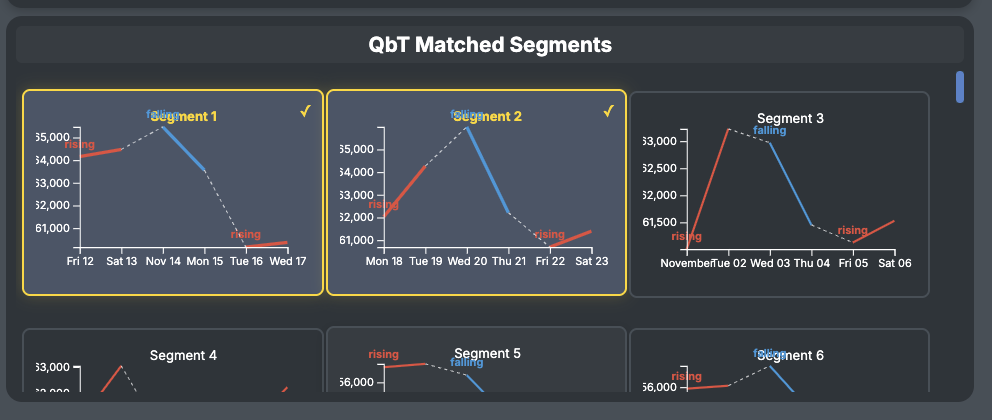
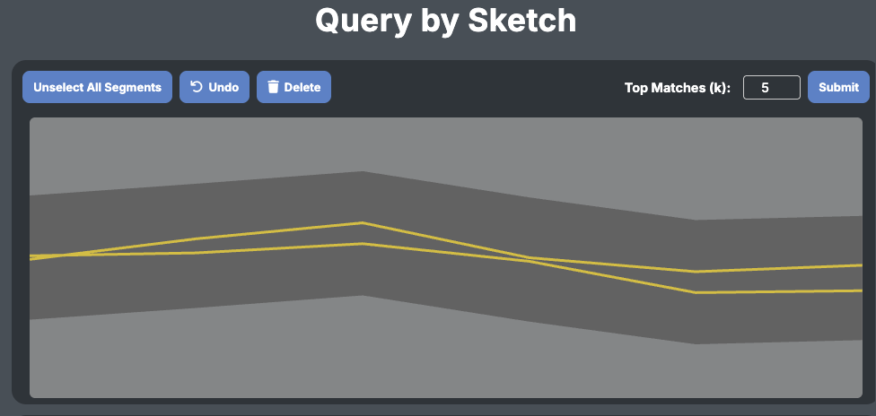
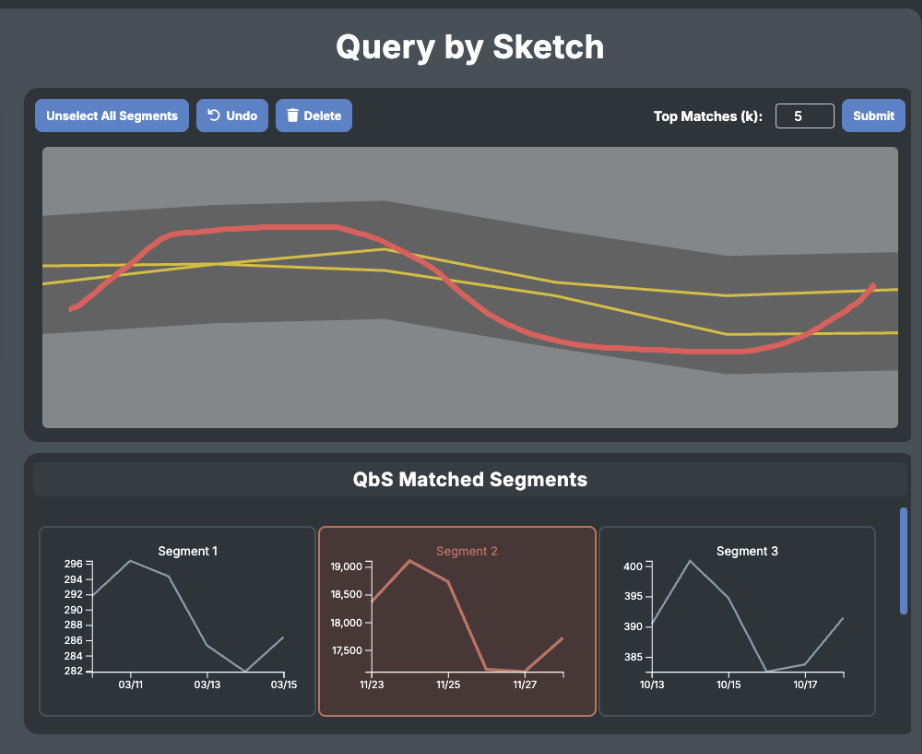
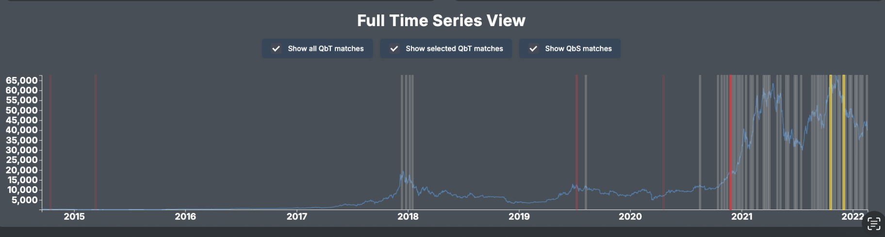

1.Speak-to-Draw — Multimodal Time-Series Pattern Search Interface
UC Davis VIA Lab — Jan 2025 to Jun 2025

1.1 Project Overview
Speak-to-Draw is a multimodal, visualization-driven human-AI interface that enables users to explore large time-series datasets using natural-language queries and freehand sketching.
The system bridges intelligent algorithms with intuitive interaction, making complex analytical tasks accessible to non-expert users. My contribution covered the conversational module, visualization redesign, and backend pattern-matching enhancements.
1.2 Interactive Visualization & Human-AI Collaboration
I co-designed the main interface to integrate all three modalities in a cohesive, interactive layout:
(1) Chat Panel (Left)
A conversational interface where users iteratively refine search intent and learn about the dataset.
(2) Query-by-Text Panel (Center)
Global/local feature descriptors and segments matched via feature-based analysis.
(3) Query-by-Sketch Panel (Right)
A sketch canvas where users draw a target pattern. I added shape normalization, multi-scale alignment, and similarity scoring so that the system can robustly compare user sketches with real data segments.
(4) Full Time-Series View (Bottom)
A unified visualization that overlays matched regions from both natural-language and sketch queries onto the full dataset.
1.3 User flow
(1) Pick a dataset and time window
At the top bar, the user selects a dataset (e.g., Bitcoin) and a query window size. This defines which time series is being explored and the typical length of segments the system will search over.
(2) Start in the chat box (left panel)
In the chat panel, the user can:

Ask for general information like “How should I interpret this dataset?” or “Summarize this time series.”
Specify the pattern they are looking for in natural language, for example: “find me patterns that are globally high, then rise, and then fall.”
The chatbot interprets the message and confirms the query in its response.
(3) Natural language → feature descriptors (top-middle)
From the user’s text query, the system extracts global and local feature descriptors and populates the “Feature Descriptions” panel in the upper middle:
Global features (e.g., high)
Local features (e.g., rising, falling)
The user can add, delete, or reorder these descriptors with the + / – controls to fine-tune what counts as a match, then click “Update Matches” to re-run the search.

(4) Inspect text-based matches (middle panels)
Based on the active feature descriptors, the “QbT Matched Segments” panel shows segments that satisfy the textual pattern. Each mini-plot is annotated to show where the series is rising or falling.
Clicking a segment selects it and highlights its position in the Full Time Series View at the bottom.
Text-query matches are shown in yellow in the full-series plot, so users see where these patterns occur in the global context.


(5) Refine the query by sketch (top-right)
To express a more precise shape, the user can move to the “Query by Sketch” area:
Selected segments can be used as a background reference band.
On top of this reference, the user draws a red curve representing the ideal pattern they have in mind (for example, a smoother peak or sharper drop).
This lets users combine real data examples with their own mental model of the pattern.

(6) Run sketch-based matching (right-middle)
When the user submits the sketch query:
The system compares the drawn curve against all candidate segments using normalized, multi-scale similarity measures.
The “QbS Matched Segments” panel shows the top matches ranked by similarity.
These sketch-based matches are also projected onto the Full Time Series View.
Sketch matches are shown in red in the bottom plot, allowing users to distinguish them from yellow text-query matches.
(7) Compare, iterate, and refine (bottom view)
In the Full Time Series View, users can:
Toggle checkboxes to show or hide QbT (text) and QbS (sketch) matches.
Visually compare where each type of match occurs in the overall time series.
Go back to the chat, feature descriptors, or sketch to iteratively refine their intent until the highlighted regions match what they are looking for.
This loop—chat → feature descriptors → text matches → sketch refinement → sketch matches → global view—lets users gradually align the system’s search behavior with their own understanding of the data.

1.4 Backend Enhancements for Feature & Sketch Matching
To support the multimodal interface, I improved the underlying analytics engine:
1.4.1 Feature-Based Matching
refined detection of global/local features (trends, spikes, fluctuations),
improved robustness for stable or noisy segments,
added customizable thresholds for “rising,” “falling,” etc.
1.4.2 Sketch-Based Matching
synchronized normalization between sketches and time-series windows,
incorporated multi-scale alignment,
developed a weighted shape-similarity scoring method.
These changes increased matching accuracy and adaptability across diverse datasets.
1.5 Impact
Speak-to-Draw advances the vision of intuitive interfaces for intelligent analytics, allowing users to search and interpret complex patterns without programming knowledge. My work strengthened the system’s usability, analytical robustness, and multimodal reasoning capability, helping transform the project from a prototype into a practical research tool. It is aiming to submit to EuroVis 2026